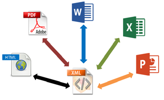
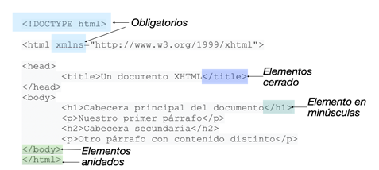
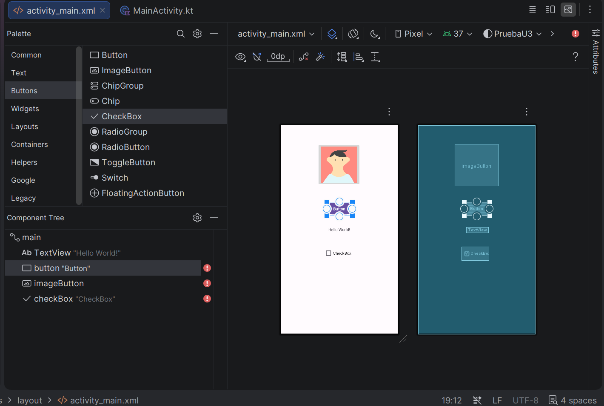
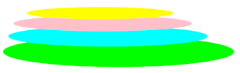
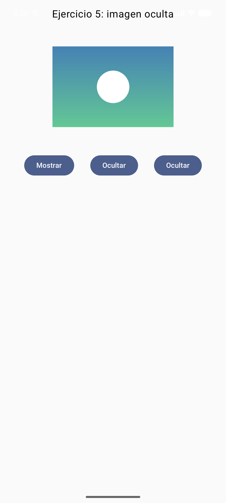
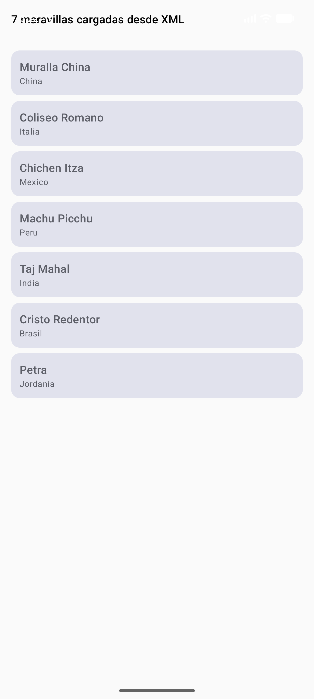

UD 3 — Generación de interfaces a partir de documentos XML
1. Introducción y contextualización práctica
En la UD 1 viste que Compose es code-first: la interfaz se escribe en Kotlin y la herramienta de diseño la renderiza en vivo. ¿Y entonces por qué dedicar una unidad entera a XML?
Porque XML no ha desaparecido de tu proyecto Android: se ha retirado del primer plano. Abre cualquier proyecto Compose recién creado y encontrarás XML en el AndroidManifest.xml, en res/values/strings.xml y themes.xml, y quizá un ic_launcher_foreground.xml en drawable/. Y si abres una app corporativa de las que mantienen los bancos —o el AOSP que ya viste en PMDM—, su capa de UI sigue siendo el sistema de vistas XML clásico, con layout/activity_main.xml describiendo jerarquías de TextView y MaterialButton.
Comprender XML sigue siendo clave por tres razones profesionales:
- Intercambio de información: XML es texto plano estructurado, legible por cualquier plataforma sin software especial.
- Lectura del legado: miles de apps en producción y tutoriales de una década usan el sistema Views; saber leerlo es saber mantenerlo.
- Recursos Android: strings, colores, temas, iconos vectoriales y el manifest son XML hoy, y lo seguirán siendo.
En esta unidad analizamos el documento XML como tal, los lenguajes de descripción de interfaces derivados, y el puente entre ambos mundos: cómo Android genera recursos a partir de XML y cómo consumirlos desde Compose con una sola línea.
Objetivo de la unidad
Al terminar sabrás leer, validar y modificar cualquier documento XML de un proyecto Android, distinguir los lenguajes derivados que siguen vivos (SVG → vector drawables, strings.xml → externalización) y conectar esos recursos con tus composables.
2. Lenguajes de descripción de interfaces basados en XML
XML (eXtensible Markup Language) es un metalenguaje: un lenguaje para definir otros lenguajes. Esa es exactamente la razón de su longevidad — quien define el vocabulario de etiquetas decide para qué sirve, y así han nacido dialectos para interfaces (XHTML, XAML, GladeXML), para datos geográficos (GML), para matemáticas (MathML), para sindicación (RSS) y para gráficos vectoriales (SVG).

2.1. XHTML
XHTML (eXtensible HyperText Markup Language) es HTML reformulado con las reglas de XML. Todo documento XHTML debe incluir <!DOCTYPE>, el atributo xmlns en <html> y las etiquetas <html>, <head>, <title> y <body>.

Sus reglas de diseño son las de XML puro — y son las mismas que te va a exigir el compilador de recursos de Android:
| Regla XHTML | En tu proyecto Android |
|---|---|
| Elementos correctamente anidados | <LinearLayout> contiene <Button>, nunca se cruzan |
| Toda etiqueta cerrada | <Button ... /> o <Button></Button>, sin excepción |
| Minúsculas para etiquetas y atributos | android:text, no Android:Text |
| Valores de atributos siempre citados | android:text="@string/hola" |
| Atributos únicos, prohibida la minimización | android:checked="true", nunca solo checked |
2.2. GML
GML (Geography Markup Language) es el dialecto del mundo GIS: describe características geográficas (coordenadas, polígonos, rutas) en XML. Las apps de mapas de hace unos años intercambiaban sus capas en GML, y KML —el dialecto de Google Earth— es su hijo directo. Hoy lo verás poco en móvil (JSON y GeoJSON se lo comieron), pero es un buen ejemplo de "XML para un dominio concreto".
El PDF original mostraba GML como un formato de texto con marcas :h1., :p. — eso es en realidad asciidoc, no GML. Confusión clásica de materiales antiguos: la defino correctamente arriba y no la arrastro.
2.3. MathML
MathML describe fórmulas matemáticas para intercambio entre programas:
<math>
<mrow>
<mi>a</mi><mn>2</mn><mo>+</mo><mi>b</mi><mn>2</mn><mo>=</mo><mi>c</mi><mn>2</mn>
</mrow>
</math>
En Android no escribirás MathML, pero la idea —describir contenido no textual de forma estructurada— la vuelves a encontrar en avd-*.xml (animaciones vectoriales) o en los objectAnimator que animan propiedades.
2.4. RSS
RSS (Really Simple Syndication) sindica contenido actualizado: titular, descripción, enlace y fechas.
<?xml version="1.0" encoding="UTF-8"?>
<rss version="2.0">
<channel>
<title>Última hora</title>
<description>Noticia importante</description>
<link>https://example.com/ultimas-noticias/</link>
<pubDate>Mon, 06 Jan 2026 16:20:00 +0000</pubDate>
</channel>
</rss>
Es el protocolo de podcasts y sigue siendo el caso de uso de XML más visible para el gran público: cuando tu app favorita de radio muestra el listado de episodios, detrás hay un <channel> con <item> por episodio. En la práctica de esta unidad consumiremos uno de verdad.
2.5. XSLT
XSLT (eXtensible Stylesheet Language Transformations) es el "CSS de XML", pero con superpoderes: no solo aplica estilo, sino que transforma un XML en otro documento distinto (otro XML, HTML o texto plano), añadiendo, eliminando y reordenando elementos, con condiciones y bucles. Es el antepasado conceptual de los transformadores de datos que hoy escribes en Kotlin con map/filter: entra un formato, sale otro.
2.6. SVG y los vector drawables
SVG (Scalable Vector Graphics) describe gráficos vectoriales: formas geométricas, trazos y texto. Sus primitivas básicas:
<svg width="60" height="60">
<circle cx="30" cy="30" r="25" fill="cyan" stroke="black" stroke-width="3"/>
</svg>
<svg width="60" height="60">
<rect x="0" y="0" width="60" height="60" fill="red"/>
</svg>
<svg width="60" height="60">
<ellipse cx="30" cy="30" rx="20" ry="16" fill="orange"/>
</svg>
<svg width="60" height="60">
<polygon fill="green" stroke="black" stroke-width="2" points="5,30 15,10 25,30"/>
</svg>
Y aquí viene el puente con tu día a día de desarrollador Android: Android Studio convierte cualquier SVG en un vector drawable (clic derecho sobre drawable/ → New → Vector Asset), que es un XML casi idéntico pero con vocabulario Android:
<!-- res/drawable/ic_onda.xml -->
<vector xmlns:android="http://schemas.android.com/apk/res/android"
android:width="24dp" android:height="24dp"
android:viewportWidth="24" android:viewportHeight="24">
<path android:fillColor="#2E7D32"
android:pathData="M12,4L16,10L8,10Z" />
</vector>
El <svg> se vuelve <vector>, el fill se vuelve android:fillColor y las formas se compilan en pathData. El flujo profesional es exactamente ese: el diseñador entrega SVG → tú lo importas como drawable → lo usas en Compose. El logo escalable que una radio pediría en 2023 ya no es un <svg> incrustado en una web, sino un drawable vectorial a todas densidades.
3. El documento XML. Análisis y edición
3.1. La primera línea: prólogo
version: versión de la especificación XML empleada (1.0 sigue siendo la norma).encoding: juego de caracteres (UTF-8 en todo lo que hagas; es el estándar de facto en Android).
Un archivo strings.xml de Android no lleva prólogo (lo añade la herramienta de build), pero cualquier XML independiente que escribas sí debe llevarlo.
3.2. Etiquetas, elementos y nodos
Una etiqueta empieza con <, continúa con un nombre identificativo y termina con >. El nombre debe empezar por letra y puede continuar con letras, dígitos, guiones y puntos:
- Start-Tag o etiqueta de apertura:
<etiqueta> - End-Tag o etiqueta de cierre:
</etiqueta> - Empty-Tag o etiqueta vacía:
<etiqueta_vacia />
El conjunto de etiqueta de apertura + contenido + etiqueta de cierre es un elemento o nodo. <nombre>Lucas</nombre> es un elemento con etiqueta nombre y contenido Lucas. Un elemento puede contener a otros elementos, pero no mezclar hijos y texto en el mismo nivel — esa es la diferencia entre un árbol limpio y un documento ambiguo:
<!-- BIEN: jerarquía limpia -->
<cliente>
<nombre>Lucas</nombre>
<pedidos>
<pedido id="7"/>
</pedidos>
</cliente>
<!-- MAL: texto y elementos mezclados -->
<cliente>Lucas<pedido id="7"/></cliente>
La estructura es jerárquica y anidada: las etiquetas hijas se cierran antes que las madres, y toda etiqueta abierta debe quedar cerrada en orden inverso a su apertura. La Figura 3 del material original lo representa como un árbol genealógico de nodos — exactamente la misma metáfora que ya usamos para la jerarquía de composables en la UD 1.
3.3. Atributos y valores
Un atributo es un par nombre="valor" que vive dentro de la etiqueta de apertura o de la vacía — nunca en la de cierre. Los atributos de un elemento son únicos: no puede haber dos apellido en la misma etiqueta.
<!-- Correcto: tres atributos únicos -->
<programadora nombre="Augusta" apellido1="Ada" apellido2="King"/>
<!-- Incorrecto: atributo repetido -->
<programadora nombre="Augusta" apellido="Ada" apellido="King"/>
En Android verás la treta inversa usada a conciencia: cuando un elemento necesita lista de valores, se usan elementos repetidos en lugar de un atributo repetido:
<!-- res/values/arrays.xml -->
<integer-array name="duracion_barras">
<item>300</item>
<item>150</item>
<item>600</item>
</integer-array>
3.4. Bien formado vs. válido
Un XML está bien formado cuando cumple las reglas sintácticas anteriores (etiquetas cerradas, anidamiento correcto, atributos citados y únicos). Está válido cuando además obedece a un vocabulario externo — DTD o XML Schema. Android usa su propia validación: el compilador de recursos (AAPT) conoce el vocabulario de <vector>, <selector> o <string> y rompe el build con mensajes tan explícitos como:
(Con la errata fillColour → fillColor incluida: AAPT no perdona ni una mayúscula — XML es case-sensitive.)
3.5. Herramientas de análisis y edición
Los editores de XML modernos resaltan sintaxis, autocompletan etiquetas y estructuras comunes, y validan al vuelo. La comparativa clásica del material original — Notepad++ con su plugin XML Tools, Atom con Teletype, Dreamweaver WYSIWYG, VS Code con Live Share — queda hoy así:
| Necesidad | Herramienta 2026 |
|---|---|
| Editar un XML suelto rápido | Cualquier editor con resaltado: VS Code, Notepad++ |
| Validar contra schema | VS Code + extensión XML (Red Hat) |
| Interfaz WYSIWYG desde XML | Ya no aplica en Android: Compose es code-first |
| Colaboración en tiempo real | VS Code Live Share / JetBrains Code With Me |
| El editor que ya tienes abierto | Android Studio: valida, autocompleta y previsualiza tus recursos XML |
Si el material de 2 años atrás dedicaba un apartado entero a elegir editor XML, hoy la respuesta es una: el que ya usas para programar. En Android Studio abres strings.xml o un drawable y tienes los tres servicios — resaltado, autocompletado y validación — sin instalar nada.
¿Y el clásico Layout Editor de vistas XML?
El editor visual de layouts XML (Design/Dual) sigue existiendo para apps Views heredadas, pero no es el camino recomendado para UI nueva: para eso está Compose, que viste en las UD 1 y 2. Aquí nos quedamos con la parte de XML que sigue viva: recursos y datos.
3.6. El Layout Editor: la palette que volvió
En la UD 1 descartamos la palette de componentes porque en Compose no existe: el código es la fuente de la verdad. Pues bien: en el sistema Views XML la palette sigue ahí, y es justo la "herramienta específica" que pide el temario para generar interfaces desde XML.
Abre un layout XML (o crea una Empty Views Activity) y pulsa Split o Design en la esquina superior derecha del editor. Eso es el Layout Editor:

Sus tres piezas, que son literalmente los criterios del RA2 del módulo:
| Pieza | Qué hace | Criterio RA2 |
|---|---|---|
| Palette (izquierda) | Arrastras Button, TextView, CheckBox… al lienzo y Android Studio escribe el XML por ti |
b) Se ha generado la descripción del interfaz en XML usando un editor gráfico |
| Component Tree | La jerarquía de nodos como árbol — la misma metáfora del árbol de composables de la UD 1 | c) Se ha analizado el documento XML generado |
| Attributes (derecha) | Cambias text, size, onClick… visualmente y el XML se modifica al momento |
d) Se ha modificado el documento XML |
El flujo completo: arrastras de la palette → miras el XML que ha escrito → lo editas a mano en Code → vuelves a Design y ahí sigue tu cambio. Generar, analizar y modificar: el ciclo completo del RA2 sobre un solo documento, con la herramienta que ya tienen instalada.
4. Eventos
Una interfaz, por sí sola, no sabe cuándo el usuario quiere actuar. Los eventos son el mecanismo que convierte una interfaz estática en dinámica: pulsaciones, cambios de texto, foco, gestos.
El material clásico enumeraba MouseMove, MouseDown, Click, GetFocus, LostFocus… El móvil los traduce a su vocabulario (no hay ratón ni foco de teclado igual que en escritorio):
| Evento clásico (escritorio) | Equivalente Android | En Compose |
|---|---|---|
| Click | onClick |
onClick = { ... } en Button, Text con clickable… |
| Change | onTextChanged |
onValueChange = { ... } en TextField |
| GetFocus / LostFocus | onFocusChanged |
Modifier.focusProperties / onFocusEvent |
| MouseMove / MouseEntered | onHover (escritorio) |
Modifier.pointerInput + detectTapGestures |
| MouseDown / MouseUp | onTouchEvent |
pointerInput con awaitPointerEvent |
La diferencia conceptual grande está en cómo se asocia la acción al evento:
- Clásico (Views XML): en el XML pones
android:onClick="saludar"(o registras unOnClickListeneren la actividad), y en Kotlin escribesfun saludar(v: View). El XML declara el punto de conexión; el código lo implementa. - Compose: no hay registro por nombre — el handler es un parámetro más del componible:
Button(onClick = { contador++ }). La asociación evento-acción es una expresión de Kotlin, verificada por el compilador (si te equivocas de nombre, no compila; en el sistema clásico, fallaba en ejecución).
@Composable
fun ContadorEventos() {
var clics by remember { mutableStateOf(0) }
var texto by remember { mutableStateOf("") }
Column(horizontalAlignment = Alignment.CenterHorizontally,
verticalArrangement = Arrangement.spacedBy(8.dp)) {
Text("Clics: $clics")
OutlinedTextField(value = texto, onValueChange = { texto = it },
label = { Text("Escribe algo") })
Button(onClick = { clics++ }) { Text("Suma") }
}
}
Tres eventos, tres líneas de asociación: onValueChange (Change), onClick (Click), y el propio Text("Clics: $clics") reaccionando al estado — la UI declarativa de Compose es, en el fondo, la respuesta automática a todos los eventos de estado.
5. Generación de recursos y código para Android
La promesa del XML de interfaces era "escribe el documento una vez, genera la interfaz para cada plataforma". En Android esa promesa se cumple a escala de recursos:
- Escribes el documento XML (
strings.xml,ic_logo.xml,themes.xml…). - AAPT lo compila y genera la clase
Rcon identificadores (R.string.app_name,R.drawable.ic_logo). - Consumes desde código — clásico o Compose — con una línea.
// Compose consumiendo recursos nacidos en XML:
Text(stringResource(R.string.bienvenida)) // strings.xml
Icon(painterResource(R.drawable.ic_logo), null) // drawable vectorial (SVG importado)
Text("Hola", color = MaterialTheme.colorScheme.primary) // themes.xml
El esquema del material original — XML → herramienta → código multiplataforma — es literalmente este flujo, solo que el "código generado" ya no es un form1.java autogenerado sino la clase R y los accesores de recursos.
Del SVG al icono en pantalla, el camino completo:
flowchart LR
A[SVG del diseñador] -->|New → Vector Asset| B[drawable/ic_logo.xml]
B -->|AAPT compila| C[Clase R]
C -->|painterResource| D[Icon en Compose]
style A fill:#e8f5e9
style D fill:#e3f2fd5.1. Caso práctico 1: "El logo de la radio, versión 2026"
Planteamiento. La emisora FourWaves (naturaleza, mindfulness, corazón y economía) quiere su logo vectorial para la app Android: cuatro ondas superpuestas — verde, azul, rosa y amarilla — reescalables a cualquier densidad.
Nudo. En el material clásico se resolvía con un <svg> con cuatro <ellipse> en una web. Hoy el mismo diseño viaja por el flujo Android: el diseñador entrega el SVG y tú lo conviertes en vector drawable. Estas son las cuatro elipses originales…
<svg height="150" width="500">
<ellipse cx="240" cy="100" rx="220" ry="30" style="fill:lime"/>
<ellipse cx="220" cy="70" rx="190" ry="20" style="fill:cyan"/>
<ellipse cx="210" cy="45" rx="170" ry="15" style="fill:pink"/>
<ellipse cx="205" cy="25" rx="140" ry="12" style="fill:yellow"/>
</svg>
…y así queda tras importarlo (Vector Asset acepta el SVG y genera el XML Android):
<!-- res/drawable/ic_fourwaves.xml -->
<vector xmlns:android="http://schemas.android.com/apk/res/android"
android:width="120dp" android:height="36dp"
android:viewportWidth="500" android:viewportHeight="150">
<path android:fillColor="#7CB342"
android:pathData="M20,100 a220,30 0 1,0 440,0 a220,30 0 1,0 -440,0"/>
<path android:fillColor="#4DD0E1"
android:pathData="M30,70 a190,20 0 1,0 380,0 a190,20 0 1,0 -380,0"/>
<path android:fillColor="#F48FB1"
android:pathData="M40,45 a170,15 0 1,0 340,0 a170,15 0 1,0 -340,0"/>
<path android:fillColor="#FFF176"
android:pathData="M65,25 a140,12 0 1,0 280,0 a140,12 0 1,0 -280,0"/>
</vector>
Desenlace. En la pantalla Compose:
Image(
painter = painterResource(R.drawable.ic_fourwaves),
contentDescription = "Logo FourWaves",
modifier = Modifier.fillMaxWidth()
)

Un solo XML, todas las densidades: el drawable vectorial no tiene @2x/@3x como los PNG — escala sin pérdida porque es matemática, no píxeles. Y este es el resultado real, corriendo en el emulador: la app consumiendo un drawable a través de painterResource — con Mostrar/Ocultar gobernando la recomposición:

5.2. Caso práctico 2: "Estructura de un documento XML de datos"
Planteamiento. Para la app de viajes TravelWithMe necesitamos almacenar las siete maravillas del mundo moderno (nombre, país).
Nudo. Un documento XML de datos, con elemento repetido maravilla y subelementos nombre/pais:
<?xml version="1.0" encoding="UTF-8"?>
<maravillas>
<maravilla>
<nombre>Muralla China</nombre>
<pais>China</pais>
</maravilla>
<maravilla>
<nombre>Coliseo Romano</nombre>
<pais>Italia</pais>
</maravilla>
<maravilla>
<nombre>Chichén Itzá</nombre>
<pais>México</pais>
</maravilla>
<maravilla>
<nombre>Machu Picchu</nombre>
<pais>Perú</pais>
</maravilla>
<maravilla>
<nombre>Taj Mahal</nombre>
<pais>India</pais>
</maravilla>
<maravilla>
<nombre>Cristo Redentor</nombre>
<pais>Brasil</pais>
</maravilla>
<maravilla>
<nombre>Petra</nombre>
<pais>Jordania</pais>
</maravilla>
</maravillas>
Desenlace. La información queda estructurada en elementos maravilla repetidos con subelementos regulares — el patrón exacto que luego parsearás con XmlPullParser en la práctica de la unidad (y el mismo que sigue hoy cualquier feed RSS o sitemap). Y aquí, el documento ya vivo en la app: parseado y pintado en una LazyColumn de Cards:

6. Resumen
- XML es un metalenguaje: define lenguajes (XHTML, GML, MathML, RSS, XSLT, SVG). En Android los que siguen vivos son SVG→vector drawables, strings/temas/colores y el manifest.
- Un documento XML bien formado exige prólogo, etiquetas cerradas y correctamente anidadas, minúsculas, atributos únicos y valores citados. AAPT valida el vocabulario Android al compilar.
- Los eventos clásicos (Click, Change, Focus…) existen en Android; en Compose la asociación evento→acción es un parámetro de Kotlin (
onClick = { }), verificada en compilación. - El flujo moderno de "interfaz desde XML" es: SVG → Vector Asset → drawable XML → clase R → composable. La generación de código multiplataforma que prometía XML la cumple hoy la clase
Rpara recursos. - Los documentos de datos (maravillas, feeds RSS) siguen el patrón elemento contenedor + elementos repetidos con subelementos regulares: listo para parsear con
XmlPullParser.
Bibliografía y fuentes
- Develop Android. Vector graphics. Android Developers. https://developer.android.com/develop/ui/views/graphics/vector-drawable-resources
- Develop Android. App resources overview. Android Developers. https://developer.android.com/guide/topics/resources/providing-resources
- W3C. Extensible Markup Language (XML) 1.0 (Fifth Edition). https://www.w3.org/TR/xml/
- W3C. Scalable Vector Graphics (SVG) 1.1. https://www.w3.org/TR/SVG11/
- Material original del módulo (Tema 3, 2023) — adaptado, corregido y actualizado a Kotlin/Jetpack Compose.